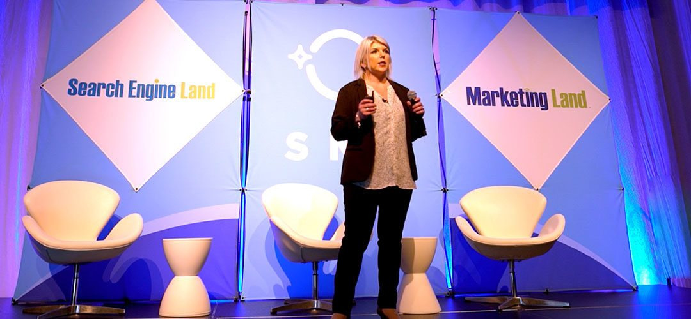
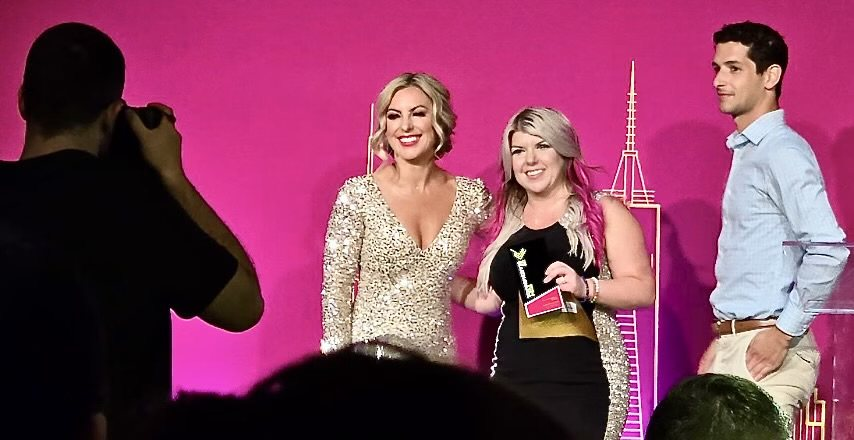
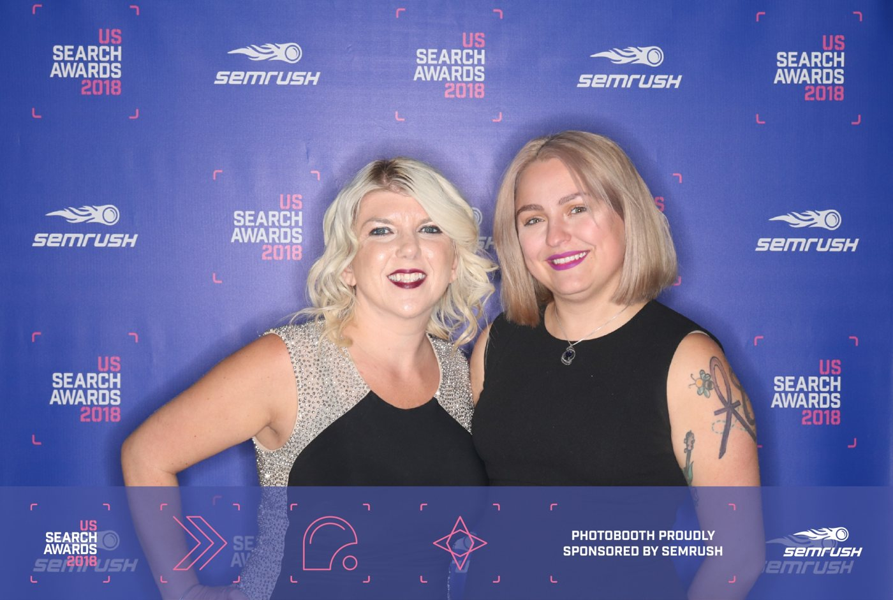
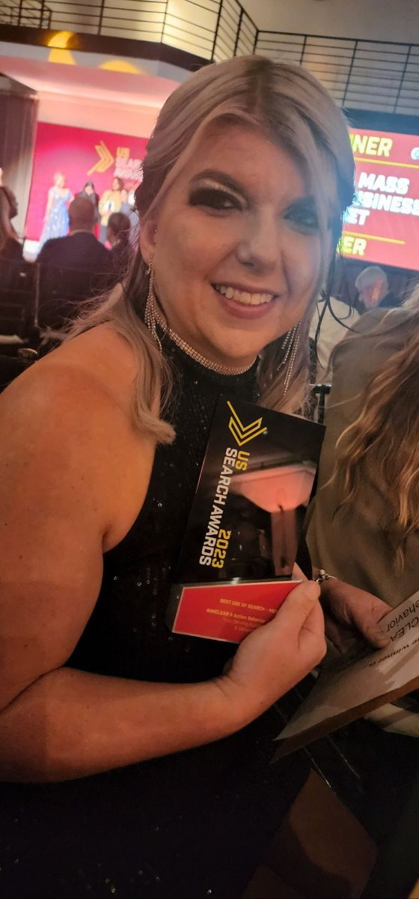
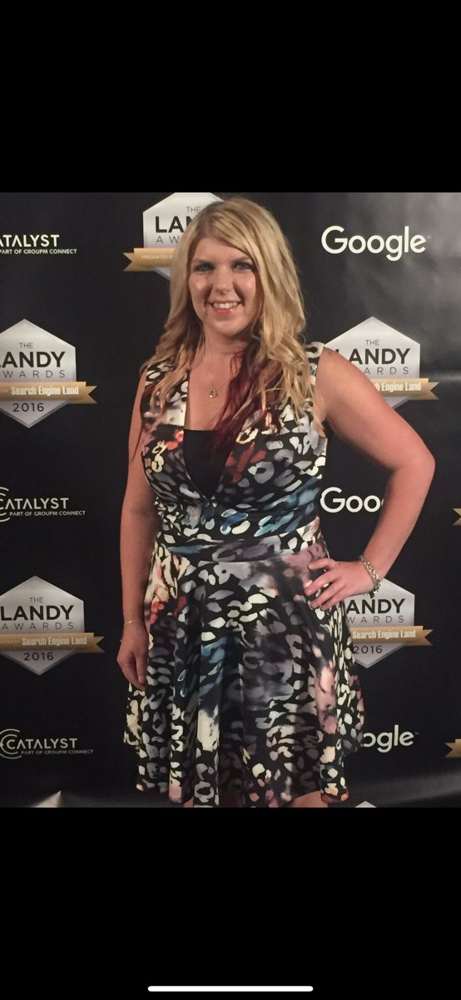

Keynotes and workshops for leaders making real decisions in a fast-changing world. High-human, systems-deep, and built to send people home with one thing they cannot unsee.
For years I ran marketing inside high-growth, investor-backed environments. Every quarter was a scoreboard. That world teaches a discipline you can't fake, and it costs you something most people won't name. I'm not in that world anymore. I take what it taught me to founder-led and privately held businesses, the ones trying to grow without losing the thing that made them worth building.
The lesson that stuck had almost nothing to do with marketing. Most business problems are human problems. The strategy is usually fine. The meaning gets lost on the way to execution. As AI reshapes the work and every team is asked to do more with less, the companies that pull ahead won't be the ones with the most tools. They'll have clearer communication, more trust, and leaders who can move a vision into action without losing the people behind it.
This talk is about building the system without becoming one. Keep the discipline of high-growth. Drop the growth-at-all-costs. Grow in a way that still feels human once you get there.
The companies that win won't have the most technology. They'll lose the least humanity while they build.
Search changed, and most brands didn't notice. People ask AI before they ask Google. They trust a Reddit thread over a landing page. They decide long before they ever talk to sales. This is the conversation every leadership team needs to have about how buyers actually find and trust them now, and what shifts when AI sits between a brand and its customer. Current, practical, and built for the people who own the number.
Search is becoming infrastructure. Most brands still treat it like a channel.
Most companies are buying AI tools hoping they'll solve a growth problem. AI doesn't solve. It scales whatever is already there. Bad data, weak positioning, broken reporting, misaligned teams, all of it gets bigger and faster. This talk is about the unglamorous work AI makes more valuable, not less. Clean inputs. Clear positioning. A team that actually agrees on what they're solving. The companies pulling ahead aren't the ones with the most tools. They're the ones whose foundations can hold the weight.
AI isn't a growth strategy. It's an amplifier.
Marketing can't sit in its own lane anymore. Growth happens when marketing, sales, finance, operations, and product are solving the same problem, and most of the time they aren't. The strongest marketing leaders I've worked with function as translators. They move between the dashboard and the human, between what leadership thinks is happening and what the customer is actually experiencing. This talk is about leading marketing like a business leader, and why that's the role AI makes more valuable, not less.
We're no longer marketing on top of the business. We're marketing through it.
Making conscious decisions in an unknown world. Why most failures are decision failures, and how leaders steer instead of drift.
Search, AI, content, and audience as one connected system. How to out-structure instead of out-spend.
Identity, voice, and self-trust. Leading without erasing yourself to fit a room that was not built for you.
Reach as a wheel you build, not a campaign you buy. The system behind content that compounds.
Main-stage talks at the conferences where search and AI marketing get decided, plus award stages and rooms full of operators.





30 to 60 minutes. One big idea, made memorable, with a framework the room can repeat.
Half or full day. Leadership, integrated marketing, AI readiness, and organizational clarity, hands-on.
Conversation, Q&A, and the honest version of how the work actually happens.
Booking a podcast, panel, or keynote? Pull from these. Built for AI-era leadership, growth, and marketing audiences.
Hope is not a marketing strategy.
AI isn't a growth strategy. It's an amplifier.
Some of the best marketing assets don't show up in attribution software.
The companies that win won't out-content their competitors. They'll out-structure them.
Keynotes, workshops, and fireside conversations. Tell me about your audience and the moment they are in.
Request availability